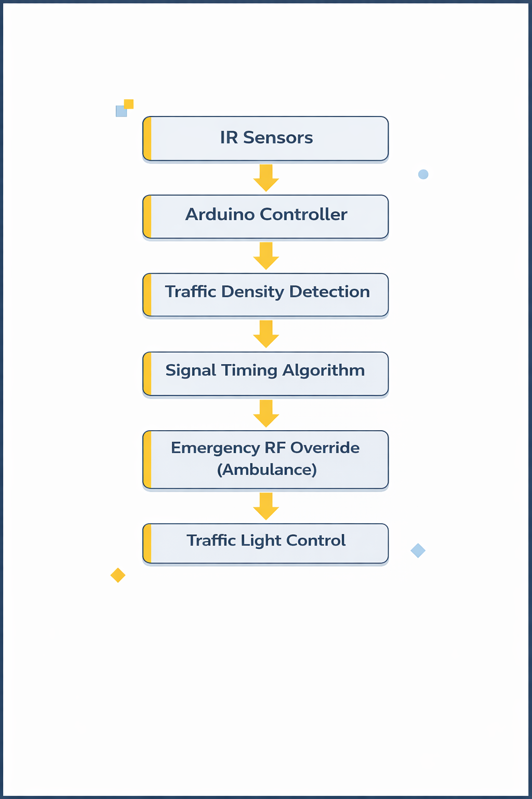

IoT-Based Smart Traffic Management System (V2I)
An Arduino Uno powered intelligent traffic control model using IR sensors for density detection, RF-based ambulance priority override, and a gas sensor-based fire detection system. Awarded 1st place at Zonal and 2nd at District level.
Key Features
Real-Time Density Detection
IR sensors at intersections continuously count vehicles and measure traffic density on each lane.
Dynamic Signal Timing
Arduino adjusts green light duration based on live sensor data — busy lanes get longer green time automatically.
Emergency RF Override
RF transmitter on the ambulance broadcasts a signal; the receiver module instantly switches the junction to green, clearing the path.
Fire / Gas Detection
Gas sensor detects smoke or hazardous gases and triggers an emergency all-red halt to protect road users.
Autonomous Operation
The system runs continuously without human intervention, cycling through lanes and responding to events in real time.
Low-Cost Hardware
Built entirely on affordable, off-the-shelf components — Arduino, IR LEDs, and 27 MHz RF modules — making it highly scalable.
System Architecture
- Arduino Uno — central microcontroller running the traffic logic
- IR Sensors — placed per lane to detect vehicle presence and queue length
- RF Transmitter / Receiver (27 MHz) — emergency vehicle communication module
- Gas Sensor (MQ-series) — detects smoke and hazardous gases
- Relay Module — switches high-power signal LEDs from Arduino's low-power output
- Signal Timing Algorithm — proportional green time based on queue density
System Workflow

My Role in the Project
- Designed and physically built the mechanical traffic model (roads, buildings, signal poles)
- Integrated IR sensors with Arduino Uno and wrote the density-based timing algorithm
- Implemented and tested the RF-based emergency vehicle prioritization system
- Wired and tested the relay module for signal LED switching
- Collaborated on project presentation and technical documentation


Virtual Demonstration
Demonstration of the RF-based emergency vehicle override system. The traffic light automatically switches to green for the approaching ambulance, clearing the intersection within seconds of signal detection.
Project Presentation
Full slide deck covering system architecture, working mechanism, circuit design, competition results, and implementation strategy.
Open Full Presentation (PDF) ↗